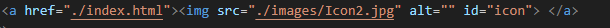

| Лабораторна Робота №1 |
Лабораторна Робота №2 |
Лабораторна Робота №3 |
Лабораторна Робота №4 |
Лабораторна Робота №5 |
Лабораторна Робота №6 |
Лабораторна Робота №7 |
Лабораторна Робота №8 |
Лабораторна Робота №9 |
| Опис предметного середовища |
Теорія про теги та атрибути, які застосовуються при роботі з зображенням
В HTML зображення визначаються за допомогою тега |
| Тема Мета Місце розташування лаби №1 |
|
| СТРУКТУРА ДОКУМЕНТА | |
| HTML-код ТАБЛИЦЬ | |
| HTML-код ФОРМИ | |
| HTML-код ЗОБРАЖЕННЯ | |
| ВИСНОВКИ |